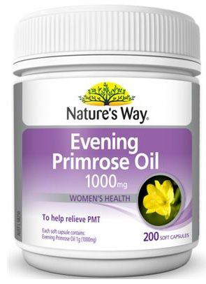

Check on your orders.
Home
Products
Cart
Delivery Information
Order Confirmation
Account
Orders
Customer Support
Contact Us
Nature's Way Evening Primrose Oil 1000mg Cap X 20

See other products by Nature's Way
Price $16.95
Discount 16%
Retail Price:$19.95
You save: $3.00
CHOOSE QUANTITY
Confirm
Product Description & Features
Nature's Way Evening Primrose Oil is cold pressed. The active ingredient Gamma Linoleic Acid (GLA) is present at the rate of 10%.
EPO is a rich source of fatty acids in the form of linoleic acid and gamma linoleic acid (GLA). As Linoleic acid cannot be synthesized by the body it has to be ingested. The GLA in EPO helps the body to produce beneficial prostaglandins which assist in the balancing of a woman's hormonal system giving relief from the symptoms of PMT. Production of GLA in the body is impaired by aging, alcohol & smoking. EPO may also be assistance in the treatment of eczema topically or through ingestion.
DIRECTIONS FOR USE
Adults: Take 1 capsules, 3 times a day with food. Or as directed by your Health Care Professional.
Children: Take only as directed by your Health Care Professional.
FORMULATION
Evening Primrose Oil (10% GLA = 100mg) 1000mg
Natural Vitamin E (d-Alpha Tocopherol) 2mg
Does not contain sucrose, glucose, yeast, lactose, gluten, wheat, corn, starch, salt or any artificial colours, flavours or preservatives.